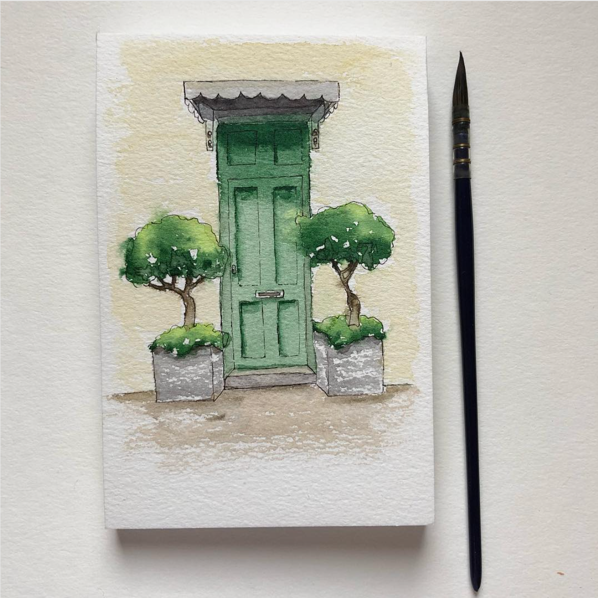

من اهم مميزات الرسم بالألوان المائية:
الشفافية .. أي أن تظهر اللون شفاف ولا يشترط فيه الطبقات إلا بأماكن الظل والنور
أنواعها:
أ - الألوان المائية الشفافة "أكوريل
وتوجد منها عدة أشكال وأنواع :
الجافة: وتكون على شكل مستطيلات أو دوائر لونية جافة داخل علبة و تبلل بالماء بفرشاة قبل التلوين.
السائلة: وتعبأ في أنابيب أوعبوات صغيرة كالأصباغ والأحبار الملونة ، و تخفف بالماء عند التلوين حسب الحاجة.
ب - الألوان المائية سميكة القوام " معتمة" جواش – بوستر
ج - ألون أكريلك Acrylic Colours
ماهو نوع ورق الرسم الذي احتاج إليه في الألوان المائية ؟
الورق المصنوع من القطن هو أفضل الأنواع وأجودها:
1-مجموعة " ساندرز واترفورد" (ٍSanders Water Ford ).
2-ورق "بوكينغورد" (Bocking Forn) المصنوع من عجينة الخشب ذات الجودة الفاخرة .
3-ورق "بلوكسورت" (Bloxworth) وهو خليط يحتوي بعض القطن
كل هذه الأنواع من الورق خالية تماما من الأحماض , مما يعني أن الألوان المائية لن تتغير أو تتأثر ألوانها وستبقى محتفظة بألوانها الأصلية .
فرش الألوان المائية:
أن أجود أنواع الفرش التي تستخدم في التلوين بالألوان المائية هي أنواع ذو الشعر الناعم و الذي يصنع من أطراف شعر ذيول نوع من الخيول بسيبريا و تسمى هذه الفرش( sable) وهي غالية الثمن و لكنها تتحمل كثيراً و أداؤها متميز. و يجب أن تكون فرش التلوين بالألوان المائية من النوع الناعم وهي أما مدببة أو عريضة (مبططة) وتتفاوت الأرقام مبتدئة بأصغرها رقم (1).
فيديو تعليمي